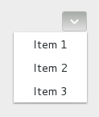

Class
GtkMenuButton
Description [src]
final class Gtk.MenuButton : Gtk.Widget {
/* No available fields */
}The GtkMenuButton widget is used to display a popup when clicked.

This popup can be provided either as a GtkPopover or as an abstract
GMenuModel.
The GtkMenuButton widget can show either an icon (set with the
GtkMenuButton:icon-name property) or a label (set with the
GtkMenuButton:label property). If neither is explicitly set,
a GtkImage is automatically created, using an arrow image oriented
according to GtkMenuButton:direction or the generic
“open-menu-symbolic” icon if the direction is not set.
The positioning of the popup is determined by the
GtkMenuButton:direction property of the menu button.
For menus, the GtkWidget:halign and GtkWidget:valign
properties of the menu are also taken into account. For example, when the
direction is GTK_ARROW_DOWN and the horizontal alignment is GTK_ALIGN_START,
the menu will be positioned below the button, with the starting edge
(depending on the text direction) of the menu aligned with the starting
edge of the button. If there is not enough space below the button, the
menu is popped up above the button instead. If the alignment would move
part of the menu offscreen, it is “pushed in”.
| start | center | end | |
|---|---|---|---|
| down |  |
 |
 |
| up |  |
 |
 |
| left |  |
 |
 |
| right |  |
 |
 |
CSS nodes
menubutton
╰── button.toggle
╰── <content>
╰── [arrow]
GtkMenuButton has a single CSS node with name menubutton
which contains a button node with a .toggle style class.
If the button contains an icon, it will have the .image-button style class,
if it contains text, it will have .text-button style class. If an arrow is
visible in addition to an icon, text or a custom child, it will also have
.arrow-button style class.
Inside the toggle button content, there is an arrow node for
the indicator, which will carry one of the .none, .up, .down,
.left or .right style classes to indicate the direction that
the menu will appear in. The CSS is expected to provide a suitable
image for each of these cases using the -gtk-icon-source property.
Optionally, the menubutton node can carry the .circular style class
to request a round appearance.
Accessibility
GtkMenuButton uses the GTK_ACCESSIBLE_ROLE_BUTTON role.
Constructors
gtk_menu_button_new
Creates a new GtkMenuButton widget with downwards-pointing
arrow as the only child.
Instance methods
gtk_menu_button_get_always_show_arrow
Gets whether to show a dropdown arrow even when using an icon.
since: 4.4
gtk_menu_button_get_use_underline
Returns whether an embedded underline in the text indicates a mnemonic.
gtk_menu_button_set_always_show_arrow
Sets whether to show a dropdown arrow even when using an icon or a custom child.
since: 4.4
gtk_menu_button_set_popover
Sets the GtkPopover that will be popped up when the menu_button is clicked.
Methods inherited from GtkAccessible (10)
gtk_accessible_get_accessible_role
Retrieves the GtkAccessibleRole for the given GtkAccessible.
gtk_accessible_reset_property
Resets the accessible property to its default value.
gtk_accessible_reset_relation
Resets the accessible relation to its default value.
gtk_accessible_reset_state
Resets the accessible state to its default value.
gtk_accessible_update_property
Updates a list of accessible properties.
gtk_accessible_update_property_value
Updates an array of accessible properties.
gtk_accessible_update_relation
Updates a list of accessible relations.
gtk_accessible_update_relation_value
Updates an array of accessible relations.
gtk_accessible_update_state
Updates a list of accessible states. See the GtkAccessibleState
documentation for the value types of accessible states.
gtk_accessible_update_state_value
Updates an array of accessible states.
Methods inherited from GtkBuildable (1)
Properties
Gtk.MenuButton:always-show-arrow
Whether to show a dropdown arrow even when using an icon or a custom child.
since: 4.4
Gtk.MenuButton:direction
The GtkArrowType representing the direction in which the
menu or popover will be popped out.
Properties inherited from GtkWidget (34)
Gtk.Widget:can-focus
Whether the widget or any of its descendents can accept the input focus.
Gtk.Widget:can-target
Whether the widget can receive pointer events.
Gtk.Widget:css-classes
A list of css classes applied to this widget.
Gtk.Widget:css-name
The name of this widget in the CSS tree.
Gtk.Widget:cursor
The cursor used by widget.
Gtk.Widget:focus-on-click
Whether the widget should grab focus when it is clicked with the mouse.
Gtk.Widget:focusable
Whether this widget itself will accept the input focus.
Gtk.Widget:halign
How to distribute horizontal space if widget gets extra space.
Gtk.Widget:has-default
Whether the widget is the default widget.
Gtk.Widget:has-focus
Whether the widget has the input focus.
Gtk.Widget:has-tooltip
Enables or disables the emission of the ::query-tooltip signal on widget.
Gtk.Widget:height-request
Override for height request of the widget.
Gtk.Widget:hexpand
Whether to expand horizontally.
Gtk.Widget:hexpand-set
Whether to use the hexpand property.
Gtk.Widget:layout-manager
The GtkLayoutManager instance to use to compute the preferred size
of the widget, and allocate its children.
Gtk.Widget:margin-bottom
Margin on bottom side of widget.
Gtk.Widget:margin-end
Margin on end of widget, horizontally.
Gtk.Widget:margin-start
Margin on start of widget, horizontally.
Gtk.Widget:margin-top
Margin on top side of widget.
Gtk.Widget:name
The name of the widget.
Gtk.Widget:opacity
The requested opacity of the widget.
Gtk.Widget:overflow
How content outside the widget’s content area is treated.
Gtk.Widget:parent
The parent widget of this widget.
Gtk.Widget:receives-default
Whether the widget will receive the default action when it is focused.
Gtk.Widget:root
The GtkRoot widget of the widget tree containing this widget.
Gtk.Widget:scale-factor
The scale factor of the widget.
Gtk.Widget:sensitive
Whether the widget responds to input.
Gtk.Widget:tooltip-markup
Sets the text of tooltip to be the given string, which is marked up with Pango markup.
Gtk.Widget:tooltip-text
Sets the text of tooltip to be the given string.
Gtk.Widget:valign
How to distribute vertical space if widget gets extra space.
Gtk.Widget:vexpand
Whether to expand vertically.
Gtk.Widget:vexpand-set
Whether to use the vexpand property.
Gtk.Widget:visible
Whether the widget is visible.
Gtk.Widget:width-request
Override for width request of the widget.
Properties inherited from GtkAccessible (1)
Signals
Signals inherited from GtkWidget (13)
GtkWidget::destroy
Signals that all holders of a reference to the widget should release the reference that they hold.
GtkWidget::direction-changed
Emitted when the text direction of a widget changes.
GtkWidget::hide
Emitted when widget is hidden.
GtkWidget::keynav-failed
Emitted if keyboard navigation fails.
GtkWidget::map
Emitted when widget is going to be mapped.
GtkWidget::mnemonic-activate
Emitted when a widget is activated via a mnemonic.
GtkWidget::move-focus
Emitted when the focus is moved.
GtkWidget::query-tooltip
Emitted when the widgets tooltip is about to be shown.
GtkWidget::realize
Emitted when widget is associated with a GdkSurface.
GtkWidget::show
Emitted when widget is shown.
GtkWidget::state-flags-changed
Emitted when the widget state changes.
GtkWidget::unmap
Emitted when widget is going to be unmapped.
GtkWidget::unrealize
Emitted when the GdkSurface associated with widget is destroyed.
Signals inherited from GObject (1)
GObject::notify
The notify signal is emitted on an object when one of its properties has its value set through g_object_set_property(), g_object_set(), et al.